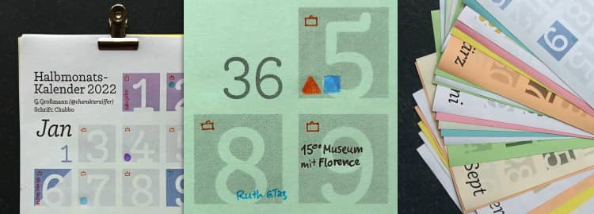

@charak
@charak3 Tage + 4 Tage
Der Alltag der meisten Menschen gliedert sich in einen festen Rhythmus aus sieben Tagen: Ein verschlafener Montag, ein organisierter Dienstag, ein Mittwoch mit Bergfest, ein langer Donnerstag, ein Freitag voller Vorfreude und dann (endlich) das Wochenende: Samstag mit aufräumen, einkaufen, Freizeit, und der Sonntag zum Faulenzen oder für Zeit mit Familie und Freunden. So weit, so normal – oder?
Wer Schichtdienst in einem 10- oder 12-Tage-Rhythmus arbeitet, wer selbstständig oder schon in Rente ist, für den ist diese 7-Tage-Einteilung nicht ganz so selbstverständlich. Wenn man ausnahmsweise mal Dienstagmittag einkaufen geht, mittwochs Auto wäscht oder den Donnerstagmorgen im Museum verbringt, dann erlebt man eine Welt, die so ganz anders ist als gewohnt. Den eigenen Rhythmus zu verändern und zu hinterfragen, eröffnet eine neue Perspektive darauf, was ein normaler Alltag sein kann.

Auch dieses Jahr habe ich wieder einen Halbmonatkalender gestaltet, so wie schon oft zuvor. Das besondere an dem Design ist, dass eine Woche nicht in der gleichen Zeile steht, sondern Montag bis Mittwoch oben und dann Donnerstag bis Sonntag darunter. Damit werfe ich natürlich nicht den etablierten 7-Tage-Takt über den Haufen. Aber es ist doch ungewohnt und erfordert anfangs ein Umdenken, um den Kalender zu lesen. Aus der Zweiteilung der Woche ergeben sich gestalterisch einige Vorteile:
-
kompakte Anordnung, so dass die Wochen sogar im Hochformat auf eine DIN-A5-Seite passen – und zwar trotzdem mit …
-
Platz zum Reinschreiben, nämlich rund 8 cm² für kurze tägliche Notizen.
-
große Zahlen, die sich gut lesen lassen, auch wenn der Kalender drüben an der Wand hängt.
-
2–3 Wochen im Überblick, um einige Tage voraus- und zurückzuschauen.
-
ein frisches Konzept gibt’s als Bonus oben drauf, also nicht die 08/15-Vorlage in der abgenutzten Allerweltschrift Helvetica/Arial.
Stattdessen ist die Schriftart meines Kalenders dieses Jahr Chubbo von Rafał Buchner, erschienen im März bei der Indian Type Foundry.
Farb-Kalender herunterladen
(PDF-Datei, 300 kB)
Wer Graustufen lieber mag und dafür den Kalender auf farbiges Papier drucken möchte, kann die Schwarz-Weiß-Version herunterladen (PDF, 298 kB). Dann auf zwölf A4-Seiten ausdrucken, auf Wunsch jedes Blatt halbieren, sortieren und die Einzelblätter zusammenheften – zum Beispiel mit einer Vielzweckklammer, mit einer Spiralbindung aus dem Copy-Shop, mit etwas Leim entlang der oberden Kante oder einfach jede Seite mittig gelocht und aufgehängt.
Ich freue mich sehr, wenn ihr meinen Kalender weiterempfehlt. Dafür steht er unter einer Creative-Commons-Lizenz mit Namensnennung, nicht kommerzieller Nutzung und Weitergabe unter gleichen Bedingungen (CC BY-NC-SA). Wer den Kalender bearbeiten möchte (beispielsweise die optionalen Feiertage aufs eigene Bundesland anpassen), möge mich bitte kurz anschreiben oder hier kommentieren. Dann verschicke ich gerne die SVG-Dateien.
---
Rubrik(en):
#ansporn
#typografie